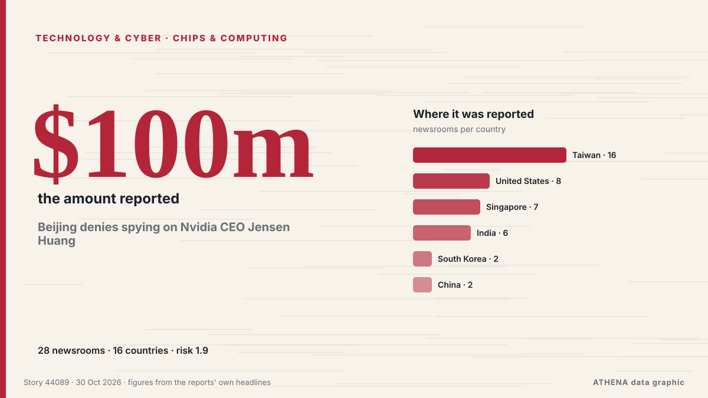

Technologie, IA et cybersécurité
Les titres sont affichés en anglais, tels que publiés.

Puces et calculBeijing denies spying on Nvidia CEO Jensen Huang
Nvidia's lead over Huawei in China's AI accelerator market has narrowed by 80% in a year, bringing CEO Jensen Huang's warnings about losing the country's US$50 billion AI chip market closer to… de DigiTimes Asia
| 18 oct. | 7 |
|---|---|
| 19 oct. | 33 |
| 20 oct. | 16 |
| 21 oct. | 32 |
| 22 oct. | 57 |
| 23 oct. | 55 |
| 24 oct. | 22 |
| 25 oct. | 25 |
| 26 oct. | 76 |
| 27 oct. | 82 |
| 28 oct. | 83 |
| 29 oct. | 77 |
| 30 oct. | 57 |
| 31 oct. | 3 |
Jack Grealish in 'breach of club discipline' as David Moyes responds to Everton decision
Former Aston Villa skipper Jack Grealish was left out of Everton's squad for their match against Newcastle. de Birmingham Mail
Finland launches criminal probe into land clearance for Google data centre
The investigation is expected to be complete at some point next year. de Yle News (alternative feed)
Reddit will make users log in as Google’s AI search cuts its traffic
Reddit is moving to a “logged-in-only experience”, chief executive Steve Huffman told shareholders on Thursday. de The Next Web
NASA Revives Apollo-Era Urgency to Build Moon Station for Astronauts
NASA is accelerating its return to the Moon, targeting a crewed lunar landing in 2028 and committing approximately US$20 billion to a program designed to establish a lasting human presence on the… de Colombia One
Elon Musk is ‘truly a genius,’ says Vladimir Putin
Putin said that he and Musk are in "close contact" about Rassvet, Russia's Starlink-like satellite connectivity project. de TechCrunch
Apple launches first touchscreen MacBook Pro with prices expected to exceed R60k in SA
Apple has officially launched its long-awaited touchscreen MacBook Pro lineup featuring M5 Pro and M5 Max chips, an Ultra Retina XDR display, and up to 24 hours of battery life. de IOL
China rejects report alleging executive with ties to Nvidia CEO worked for Beijing
New York Times claims Trump was briefed on alleged intelligence activity but took no action. de Anadolu Agency (English)
Foxconn chairman says new OpenAI tie-up is in the works, Reuters reports
Foxconn is working on a new partnership with OpenAI, chairman Young Liu told reporters in Taipei on Friday, Reuters reported. de The Next Web
Honda targets Level 4 autonomy by 2027, AI maps by 2030
Honda Motor plans to achieve Level 4 autonomous driving around 2027 and replace high-definition maps with AI technology around 2030, enabling Level 4 vehicles to navigate the narrow roads and… de DigiTimes Asia
US plans to ban Chinese telecom firms from direct access to US phone numbers
The United States plans to ban Chinese telecom firms from direct access to US phone numbers soon on national security grounds—a measure designed to prevent scam-related robocalls. de MyJoyOnline
Today in Denmark: A roundup of the latest news on Friday
New fees on non-EU parcels from next year, Denmark to take over presidency of Nordic Council and more news from Denmark on Friday. de The Local Denmark
Far-right activist Tommy Robinson found guilty of harassing journalists
Tommy Robinson was charged with two counts of harassment causing fear of violence, relating to messages and calls to two Daily Mail journalists in 2024. de ABC News Australia
Amazon sinks as AI spending eclipses fastest cloud growth in five years
Amazon, opens new tab on Thursday reported a massive cash burn in the third quarter, sending shares sharply lower, while it signaled higher capital expenditures next year atop an already huge amount… de FBC News
Hogan Lovells Cadwalader Advises Intel in Pending Acquisition of Classiq Technologies
Insider Brief PRESS RELEASE — Global law firm Hogan Lovells Cadwalader advised Intel Corporation (Nasdaq: INTC) as it entered into a definitive agreement to acquire Classiq Technologies Ltd, a… de The Quantum Insider
In China, the AI bubble has already burst
Lofty valuations collapse under worries about AI demand and curbs on Chinese exports. de Express Tribune
Nvidia, Meta partner on Muse agent as Nvidia invests $3 billion
Nvidia and Meta on Tuesday said they will partner to expand their work on Meta’s Muse assistant and the Muse family of models. de Business Recorder
Leak exposes 41,000 Homeland Security staff, including ICE and CBP agents
Records on more than 41,000 employees and contractors of the US Department of Homeland Security (DHS) are now online. de The Next Web
FTC and eight states sue Toast over hidden fees and hard-to-cancel plans
The US Federal Trade Commission and eight states have sued Toast, the restaurant software and payments company. de The Next Web
Sam Altman's "Chronic Disappointment" In MBA Students
OpenAI CEO Sam Altman believes the AI boom is creating a rare opportunity for young professionals to build something new. de NDTV
Canada joins Nvidia in backing Cohere’s record C$7bn Series E
Cohere has completed the first close of its Series E round, which it aims to grow to as much as C$7bn. de The Next Web
Microsoft beats quarterly cloud revenue estimates
Microsoft reported better-than-expected results driven by 48% growth in Azure revenue. de CNBC World
Microsoft offers voluntary exit packages to 60,000 staff
SAN FRANCISCO: Microsoft is offering voluntary buyouts to about 60,000 employees, the company said on Monday, roughly a quarter of its workforce, as the tech giant seeks to cut costs while pouring… de Business Recorder
Diri unveils AI robotic tutors at Bayelsa Medical University
The News Agency of Nigeria reports that the initiative is part of the government’s efforts to advance medical education, research and technological development in Bayelsa. de Premium Times
Samsung posts record $80bn quarterly profit on AI memory demand
Samsung Electronics made a record operating profit of 107.4 trillion won (about $80bn) in the third quarter, the company said on Thursday. de The Next Web
Pentagon treating military base freezer malfunctions as suspected cyberattack, officials say
In at least one of the cases, the freezers' temperatures were cranked up overnight. de The Straits Times
Google unveils Gemini 4 Carbon AI model
The US internet giant described its latest AI offering as its strongest frontier model, with state-of-the-art cybersecurity and long-horizon capabilities. de Free Malaysia Today
Russian Satellites Aided Iran-Backed Strikes on Saudi Arabia
Tracking data and officials link Russian spy satellites to 40 Houthi and Iraqi militia attacks on Saudi oil and military sites since July. de to vima
Amazon launches Alexa Photo Frame, Echo Time smart clock as it refreshes Alexa device line-up
Amazon has put a camera in its Echo Studio speaker so that Alexa can see what is in front of it. de The Next Web
New York passes law restricting children’s use of AI chatbots
The law states that chatbots used by minors must not produce content that could lead users to believe they are 'human, alive or experience human emotions'. de Free Malaysia Today
Privacy group files complaints against Scale AI over alleged worker surveillance
Trackers follow workers while they work, including recording keystrokes and mouse movements. de The Straits Times
UN expert: Ethiopia contributes to development of geospatial technologies in Africa
Ethiopia is helping to develop geospatial technologies in Africa, which are used for national development planning and data-driven decision-making. de New Era (Namibia)
Oracle eases AI spending worries with plan to turn cash flow positive
Credit markets will be closely watching updates from Oracle and other hyperscalers later this week. de CNBC World
Rights groups slam Egypt's Mada Masr closure, back Lina Attalah
International rights groups have condemned the closure of Egypt's Mada Masr outlet and conviction of its editor Lina Attalah amid a wider press crackdown. de The New Arab
California governor signs orders to prepare for El Nino storms
California governor signs orders to prepare for El Niño storms. de CGTN (World)